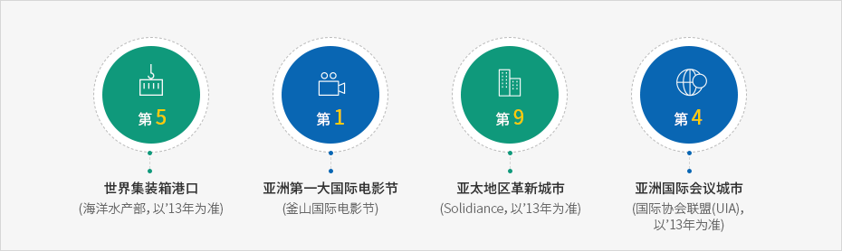
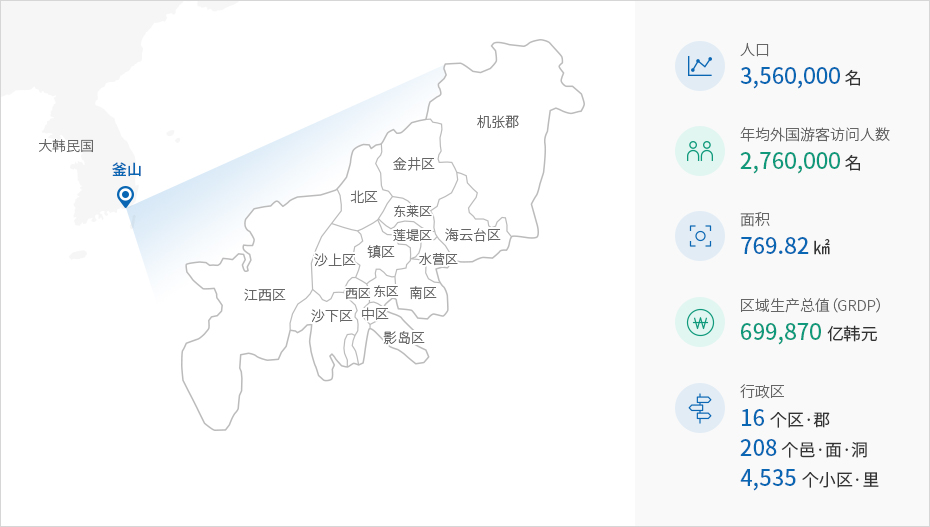
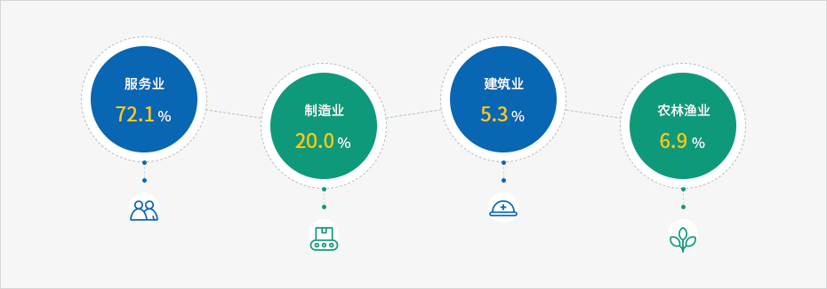
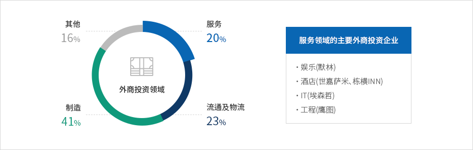
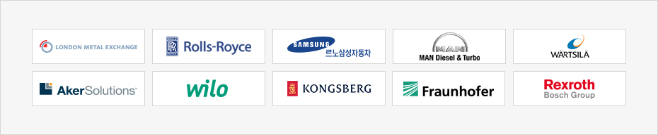

釜山介绍
- Home
- 投资优势
- 釜山介绍
大韩民国第二大城市—釜山
釜山既是拥有360万人口的大韩民国第二大城市,也是韩国通往世界的关口.在温暖的气候和得天独厚的自然环境中充满热情、温暖的釜山人造就了今天的釜山。爆发韩国战争后釜山更是取得了令人瞩目的成绩，如今发展成为拥有世界级“超级港口”的海洋物流中心城市及欧亚大陆的关口城市。并成功举办各种各样的大规模国际活动，成为名副其实的“世界中的釜山”，来自世界各地访问釜山的游客络绎不绝，旅游城市的名声日益响亮。尤其，釜山建立电影、影像、内容、金融等超越时代的产业体系的同时，十分重视环境努力发展成为了绿色城市、富饶城市。



釜山现状


釜山的产业结构
从海洋产业、物流、尖端影像产业到国际金融中心！釜山既是按区域优化文化和产业、旅游和IT产业的城市，也是所有产业和谐共存的城市。观察釜山的产业结构，可以发现产业以服务业为中心，依次为制造业、建设业、农林渔业。


釜山的产业结构
从海洋产业、物流、尖端影像产业到国际金融中心！釜山既是按区域优化文化和产业、旅游和IT产业的城市，也是所有产业和谐共存的城市。观察釜山的产业结构，可以发现产业以服务业为中心，依次为制造业、建设业、农林渔业。


主要投资企业
